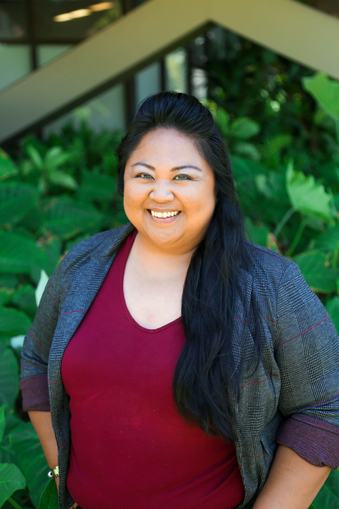

Becky will be applying to both competitive and non-competitive colleges. Her family wants her to attend school in-state since it is the cheapest option. But Becky’s dream has been to go to school somewhere warm and far away, which is why The University of Hawaii at Mānoa is one of her top choices. She will apply to the University of Massachusetts at Amherst as a target school (a college where she fits the academic profile of admitted students), the University of Illinois Urbana-Champaign (also a target school), Sarah Lawrence College (a slightly more competitive target school) and Boston University as a reach school (a college she is less likely to get into).
Becky has two main concerns. The first is that neither of her parents attended a four-year college and her high school, Lowell High School, is the second largest in the state so the college resources available to her are slim. Ultimately, she does not really know what the admissions process looks like. Her second concern is that a few months before she started making her college list and working on her Common Application, the Supreme Court ended affirmative action in higher education. She doesn’t know the specifics, but she’s worried about how it might impact her college admissions process as a Black student. Follow along as Becky’s applications go through admissions this year.
The Supreme Court decision last June outlawing affirmative action in higher education upended universities’ admissions, recruitment and retention strategies previously implemented to ensure diversity on campus. Five thousand miles away from the courthouse in Washington, Nikki Chun, the vice provost for enrollment management at The University of Hawaiʻi at Mānoa is reckoning with the aftermath.
Following the decision, she rebuilt the admissions process, completely removing the personal essays and letters of recommendation that had formerly been optional.

Nikki Chun/Credit:Josémiguel Magno
Other universities took the opposite approach this year, stressing the importance of these essays and even adding additional supplemental prompts. The goal: To offer students the chance to talk about different aspects of their identity or upbringing in order to create a holistic admissions selection. What’s also new is that universities can no longer consider the race of applicants.
Since the late 1960s, affirmative action programs have been the primary tool that selective universities used to help build a diverse student body. But that all changed in the summer of 2023 when the Supreme Court, powered by the conservative majority, ended race-conscious admissions practices nationwide.
The targets of the two lawsuits filed by Students for Fair Admissions – a nonprofit legal advocacy organization founded in 2014 by conservative activist Edward Blum – were Harvard University, the country’s oldest private university, and the University of North Carolina, one the oldest public universities. In June 2023, the Supreme Court ruled that these two institutions’ use of affirmative action policies violated the Equal Protection Clause of the Fourteenth Amendment. Chief Justice John Roberts wrote that a student “must be treated based on his or her experiences as an individual not on the basis of race.”

Two students walk in front of Harvard Library in the morning, Wednesday, Jan. 31, 2024, on the Harvard campus. (AP Photo/Heather Wang)
So where do universities go from here? Without the tools they relied on for decades to ensure equitable access to higher education for people of color, schools are grappling with how they can maintain and continue creating a diverse student body.
Becky wants to apply to Sarah Lawrence College.
Here are the steps she needs to take.
Make a Common App account and fill out the online application form.
Submit school report and transcript.
Ask her high school teachers or other mentors for recommendation letters. (SL requires one, accepts two)
Decide if she will submit her SAT or ACT score. (SL is test optional)
Interview with senior ambassadors of SL and admission counselors if she chooses she wants to do so.
Submit an optional art portfolio (which she is unlikely to do)
Write a general Common App essay and answer one of the following supplemental questions.
Why this year’s application forms look different
Unlike UH Mānoa, Sarah Lawrence College, a selective private liberal arts school in the suburbs of New York, introduced a new essay prompt that quotes the ruling directly. “Drawing upon examples from your life, a quality of your character, and/or a unique ability you possess, describe how you believe your goals for a college education might be impacted, influenced, or affected by the Court’s decision,” it asks prospective students. That follows the opinion written by Justice Roberts which specifically excludes a student’s essay from the ruling, “Nothing in this opinion should be construed as prohibiting universities from considering an applicant’s discussion of how race affected his or her life, be it through discrimination, inspiration, or otherwise.”
Chun says there is no need to include the essays and letters of recommendation as application components because “those pieces [are] not materially valuable for our decision process and for our institution.” Additionally, she felt as though these can be “barriers for students from under-resourced communities.” UH Mānoa, Hawai’i’s largest public university, has an in-state acceptance rate of 83%. As far as Chun’s concerned, “for where we are and who we serve, it's a natural hotbed for diversity” and UH Mānoa’s campus has always had a “richness of communities.” This doesn’t mean that maintaining diversity in the wake of the Supreme Court decision isn’t important. In fact Chun says that none of this should be taken for granted and that “diversity is an inherent part of the learning process that you cannot substitute” for anything.
Becky is also planning on applying for UH Mānoa because she has always want to go to Hawaii.After she turned in all her materials, here’s how UH Mānoa will assess her application.